어제 저녁때 FOMC 미팅의 결과로 장 막판에 떡락했는데 나의 매매시간이 아닌지라 매매를 못하고..
오후 3시에 장외마켓 개장하자마자 순식간에 밀어올리는 통에 또 못들어가고
그렇게 관망하다가..
장중에서 가지 하나가 한쪽으로 너무 길게 뻗으면 막판에는 매수세가 고갈되면서 피로감이 보임
밑에서 매수로 밀기 시작한 세력들은 무슨수를 써서라도 그날의 중요 지지(저항)까지 가려고 함
하지만 장외마켓인지라 동조세력이 별로없어 올라가는 속도가 점점 느려지면서 거래량도 줄어듬.
결국 메인 피봇에서 팔자주문이 큰 싸이즈로 터지는거 보고 곧바로 매도진입
역매매라 5 틱 정도만 먹고 나올 계획이었음
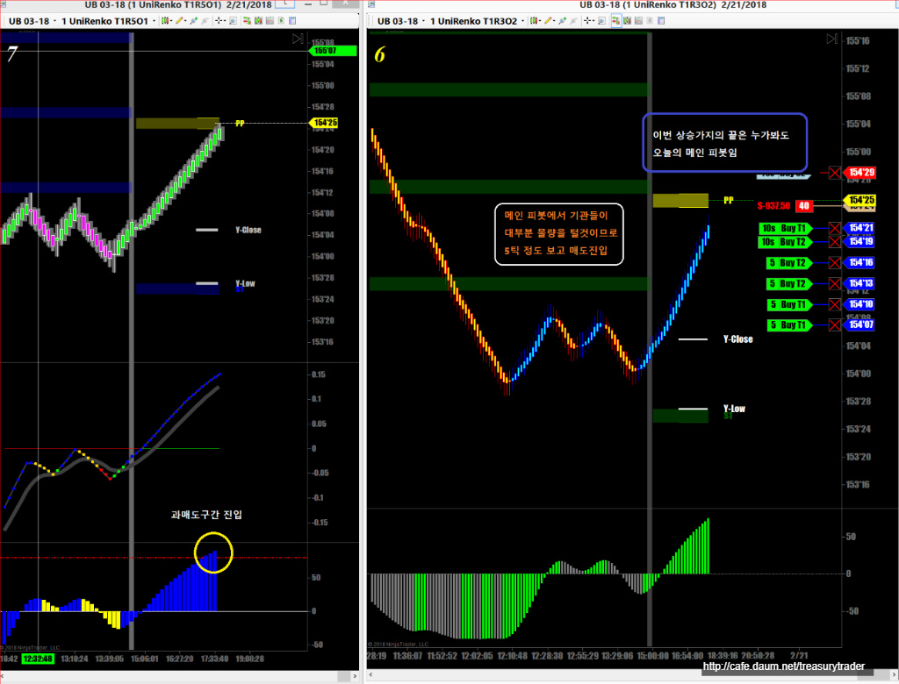
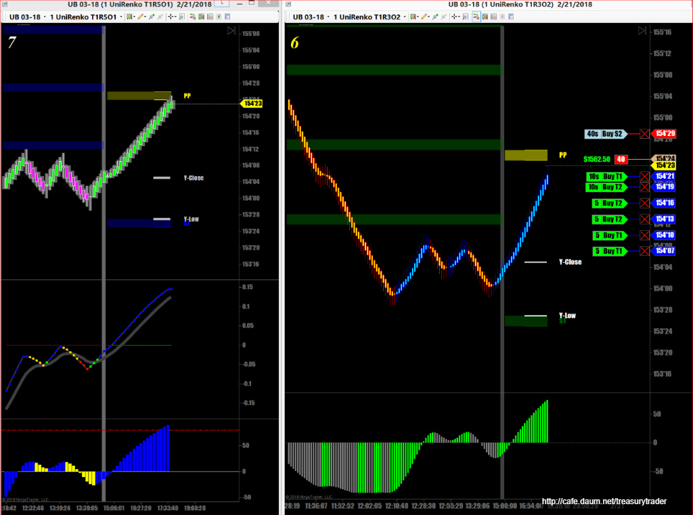
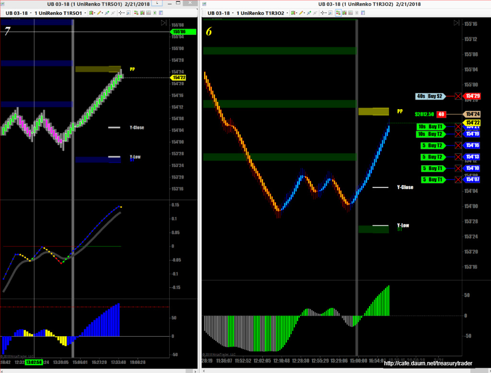
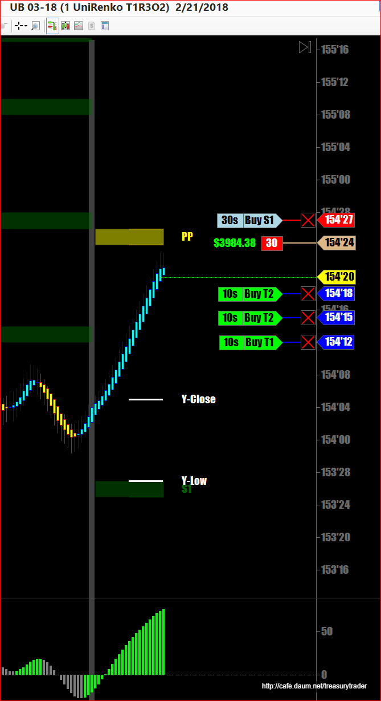
STOP을 앞으로 전진배치 수익확보
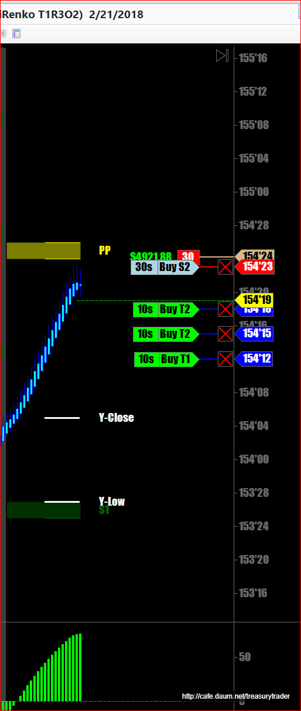
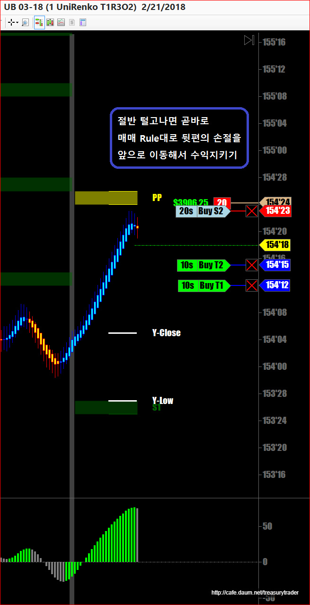
선물가가 내려갈수록 STOP도 2~3틱 간격으로 따라감
한번 따라붙은 자리에서 STOP을 뒤로 다시 빼면 안됨.
매매원칙대로 해야 함
이 매매기법은 국채선물같이 점잖은 선물에서만 가능함
크루드나 금 S&P같은 발광하면서 진행하는 선물은 진폭이 너무커서 손절을 짧게 잡으면 1초만에 끝남
그래서 그런 선물을 매매하면 손절을 크게 잡아야 하고 그렇기 때문에 한번 실패에도 손실이 엄청남
국채선물을 매매하는 이유중에 하나가 바로 진폭이 적기 때문에 손절을 짧게 잡을 수 있다는 것
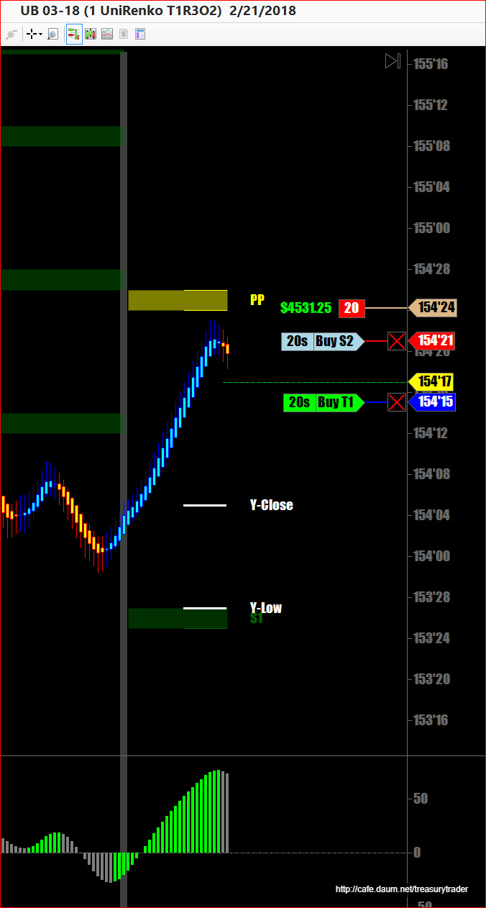
결국 위로 다시 튀면서 익절..
그후에 두번 더 매매.
남은거 조금 오버나잇으로 가지고 넘어감 (1:20AM 너무 졸려서 더이상 버티기 어려움..)
아침에 4시쯤 일어나서 어제 오버나잇한 포지션 청산.
씻고 커피마시고 뉴스 읽어보고 하다보니
이미 색깔은 바뀌고 매수신호 나왔는데 조금 늦었지만 큰 챠트상으로는 기준선 위로 올라앉아
조정받고 양봉 떴으니 일단 들어가보기로 함.
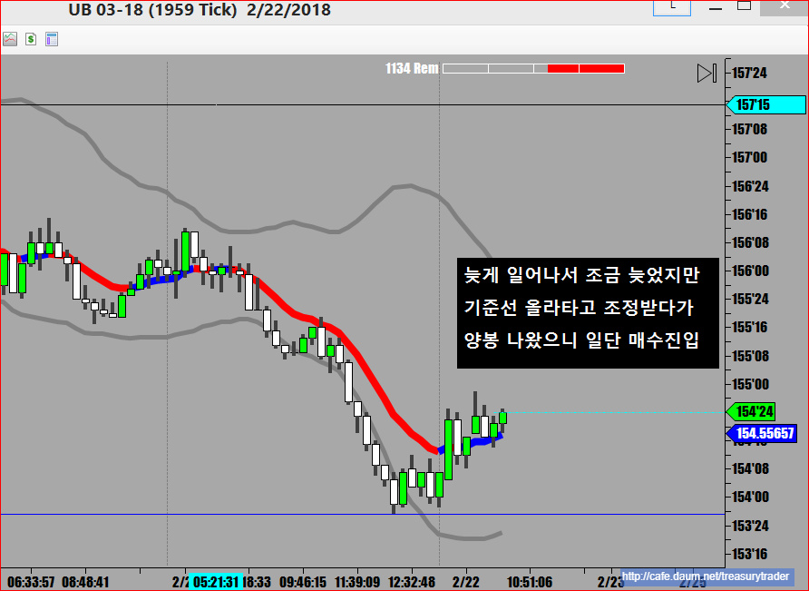
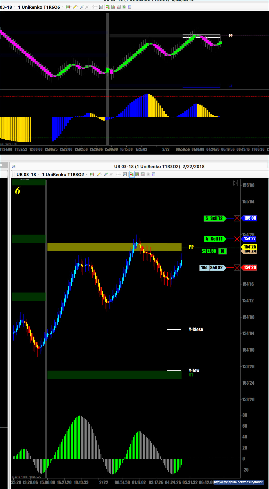
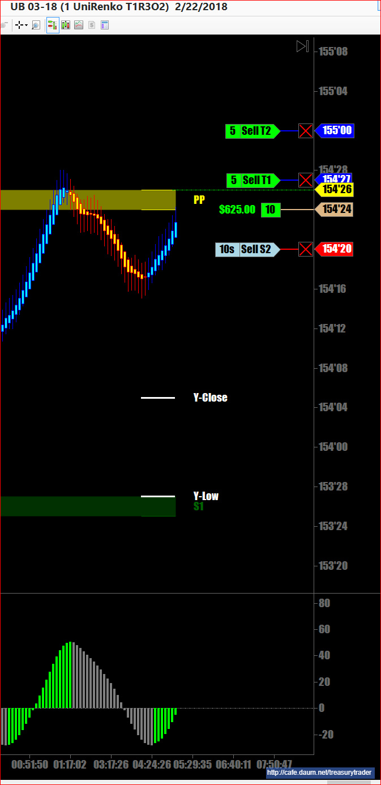
1차 수익나고 손절을 곧바로 올림
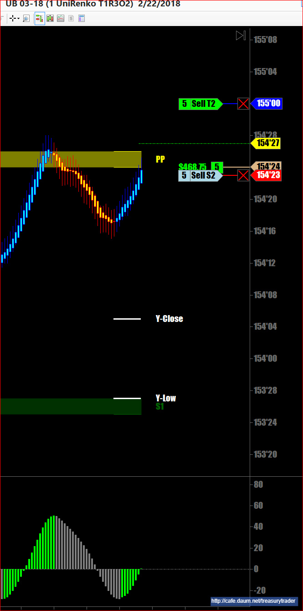
국채시장 오픈하는 시간이 아침 5시20분임
그때는 증시와 마찬가지로 순간적인 대혼란이 오는 경우가 많음
미리 매수 매도 주문을 내놓은게 많아서 그거 체결되는 5분 정도 장이 매우 불안정함
결국 익절주문을 매수가에 붙여놨더니만 심하게 진동하다가 손절걸림
그후에 예상한대로 국채는 위로 분출했음.
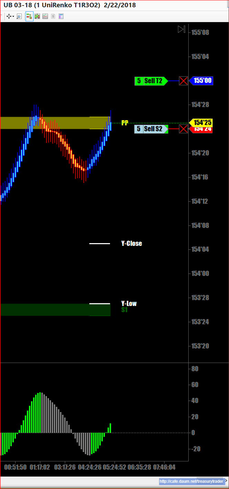
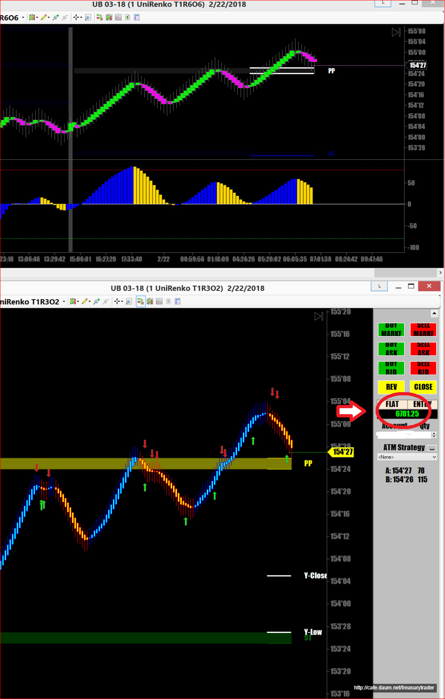
매매원칙대로 하다보면 좀 더 버텼으면 수익이 크게 났을수도 있었는데 하는 아쉬움이 가끔 있지만
장기적으로 보면 원칙을 지켜서 하는 매매가 롱런 할 수 있음
그때 그때 상황따라 눈치보면서 즉흥적으로 매매를 하다가 제대로 한번 걸리면 몇일 수익 다 날라감
우리들의 눈치는 절대로 시장을 앞서갈만큼 대단하지가 못함
적은 수익이라도 계속해서 내는것이 매우 중요하다능......
방장님 하는거보고 국채선물 매매한지가 3일짼데 30년물로 이틀 수익보고 오늘은 오전장에 못들어가고 오후장에서 들어갔는데 갑자기 안움직여서 본전에 나왔습니다. ㅋㅋ 생각보다 천천히 움직여서 크루드오일보단 쉬운거 같네요..ㅋㅋㅋ